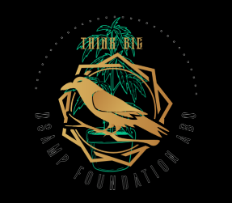
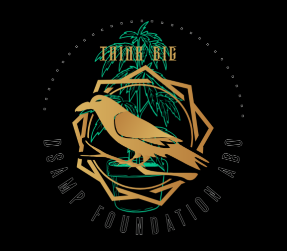

About Me
I am a Junior Data Scientist, where I specialize in Data Science and Machine Learning. My academic journey has equipped me with a strong foundation in data-driven methodologies and analytical techniques. I am deeply passionate about leveraging data science to address practical challenges across various domains, including agriculture, fraud detection, and business analytics. My goal is to develop solutions that are both impactful and innovative, combining technical expertise with real-world applications.
Through my coursework and independent projects, I have developed hands-on experience in building machine learning models, conducting data analysis, and utilizing programming tools like Python, R, and SQL. These skills have been honed through projects that aim to optimize agricultural productivity, detect fraudulent activities in financial systems, and create actionable business insights. I thrive on exploring the intersection of technology and problem-solving to create value for diverse stakeholders.
In addition to technical expertise, I enjoy collaborating with multidisciplinary teams, sharing knowledge, and contributing to a growing body of research in my field. I believe in the power of data science to transform industries, and I am committed to advancing solutions that foster sustainability, equity, and innovation.
 

Case Study: Natural Language Processing in Chatbots
As part of my work with Natural Language Processing (NLP), I contributed to the development of an AI-powered chatbot designed to handle customer inquiries. The aim was to enhance the chatbot's ability to understand and respond to a variety of customer queries.
Pre-Processing Steps
Key to the success of this project was the pre-processing of unstructured text data. This included:
- Tokenization: Breaking down the text into smaller units, such as words or phrases, to facilitate further processing.
- Normalization: Converting the text to lowercase and removing unnecessary characters (e.g., punctuation) to standardize the data.
- Stop Word Removal: Removing common words such as "the," "is," and "a" that don’t contribute meaningful information.
- Lemmatization: Reducing words to their base form (e.g., "running" becomes "run") to simplify analysis.
Advanced NLP Techniques
To further improve the chatbot's understanding, we implemented advanced techniques such as:
- Named Entity Recognition (NER): Identifying and classifying entities within the text (e.g., product names, locations).
- Part-of-Speech (POS) Tagging: Understanding the grammatical structure of the sentences to better interpret user intent.
By applying these techniques, we were able to significantly improve the chatbot's accuracy and relevance in handling customer inquiries, ensuring a smoother user experience.
Data Analytics
Data analytics distinguishes itself from data analysis by not just providing information about the current situation but predicting future outcomes. While data analysis focuses on understanding the present and past, data analytics anticipates what the future may hold by using statistical models, machine learning techniques, and historical data.
Example Case: Predicting Churn for Recurring Customers
Goal: How can we create a recommendation system? How do we categorize customers to take separate actions for each group? These questions can be answered through data analytics techniques.
Result: By using statistics, programming, and machine learning, we can identify hidden patterns in the data. This allows us to build algorithms, probability estimations, or statistical models that can guide decision-making.
Project Duration: The project can range from 3 weeks to 2 months. It begins with understanding the situation and gathering data, followed by data analysis and sharing insights. Finally, an algorithm or model is developed for implementation.
Case Study: Which Customers Are Likely to Churn?
Churn refers to the percentage of customers who cancel within a given time period. Predicting churn is valuable for businesses with recurring customers. To predict churn, we need to understand the behaviors and characteristics that signal a high risk of cancellation.
Key Characteristics for Churn Prediction:
- Customer characteristics: Age, number of people in the household
- Behavioral characteristics: Monthly electricity usage, time since sign-up
Data analytics helps in selecting key characteristics that have the highest predictive power.

Customer Lifetime Value (CLV)
Calculating CLV is essential for churn prediction. CLV predicts the total value a customer will bring to the business over time, factoring in both past and future potential.
Predicting Churn
A statistical model uses selected characteristics, CLV, and customer lifetime to calculate the probability of churn. The model ranks customers by their likelihood of leaving, which can help prioritize retention efforts.